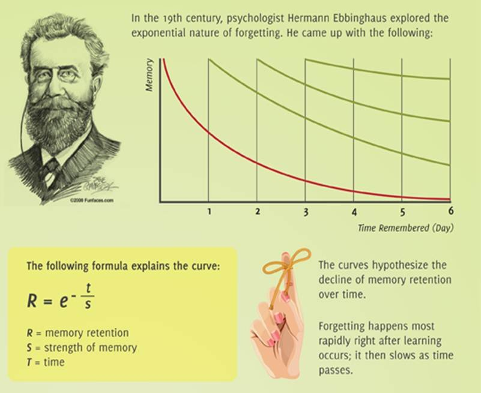
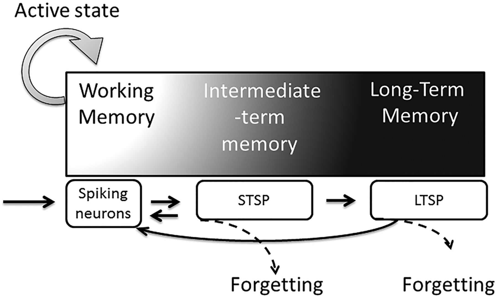

Đường cong quên lãng
Năm 1885, nhà tâm lý học người Đức Hermann Ebbinghaus công bố nghiên cứu đầu tiên có hệ thống về bộ nhớ con người. Ông phát hiện rằng não người mất đi thông tin mới theo một tốc độ có thể dự đoán được, trừ khi được củng cố chủ động.
Nhiều diễn giải hiện đại của nghiên cứu này cho rằng người học có thể quên phần lớn thông tin mới chỉ trong vài giờ đầu nếu không có sự ôn tập. Các con số cụ thể thay đổi tùy loại nội dung, độ khó và người học, nhưng xu hướng chung được nhiều nghiên cứu sau này xác nhận.

Bí mật bẩn thỉu của ngành đào tạo
Con số này tăng đều mỗi năm, nhưng câu hỏi đáng lo ngại hơn là: bao nhiêu trong số đó thực sự tạo ra kết quả lâu dài?
Nhiều nghiên cứu về chuyển hóa đào tạo (training transfer) cho thấy chỉ khoảng 10 đến 15% những gì học trong các chương trình đào tạo chính thức thực sự được áp dụng vào công việc. Wexley và Latham (2002) ghi nhận nhân viên transfer khoảng 40% ngay sau đào tạo, nhưng con số này giảm xuống 25% sau 6 tháng và chỉ còn 15% sau 1 năm.
Không phải nhân viên lười, não họ đang hoạt động đúng cách.
Não người không được thiết kế để ghi nhớ thông tin tiếp nhận thụ động, nó ghi nhớ những gì liên quan, được lặp lại và được kết nối với kinh nghiệm thực tế, nên một buổi hội thảo 8 tiếng nhồi nhét thông tin một chiều đi ngược lại hoàn toàn với cách bộ nhớ dài hạn thực sự được hình thành.
Tuần đầu onboarding của một nhân viên sales
Thứ hai, Ana bắt đầu ngày làm việc đầu tiên tại một công ty SaaS, cô được đưa vào một chuỗi workshop 3 ngày gồm tính năng sản phẩm, quy trình bán hàng, chính sách công ty và kỹ năng xử lý phản đối, hơn 200 trang tài liệu, bài kiểm tra cuối khóa đạt 87%.
Thứ sáu tuần sau, Ana gặp khách hàng đầu tiên, khi bị hỏi về một tính năng cụ thể, cô không còn nhớ chính xác, khi khách đẩy giá, cô không áp dụng được kỹ thuật xử lý đã học, không phải vì cô không cố, mà vì không có gì trong những ngày đào tạo đó luyện cho não cô thực sự truy xuất thông tin dưới áp lực.

Câu trả lời không phải đào tạo ít hơn, mà là thiết kế đúng hơn.
Microlearning cung cấp nội dung trong các module ngắn 3 đến 10 phút, mỗi module tập trung vào một kỹ năng hoặc khái niệm duy nhất, đây không phải xu hướng mới, mà là ứng dụng trực tiếp của cognitive load theory vào thiết kế đào tạo: khi não không bị quá tải, thông tin mới có khả năng chuyển sang bộ nhớ dài hạn cao hơn.
Tuy nhiên microlearning có giới hạn rõ ràng. Nghiên cứu từ Eighth Mile Consulting và DDI Global Leadership Forecast chỉ ra rằng microlearning hoạt động tốt với kiến thức thực tế, quy trình, tuân thủ nội quy và kỹ năng có thể chia nhỏ rõ ràng, nhưng không thể thay thế được các chương trình học chiều sâu cho năng lực phức tạp như lãnh đạo, tư duy phân tích hay xử lý tình huống không rõ ràng. Dùng microlearning để phát triển năng lực lãnh đạo mà không có thực hành, phản chiếu và mentoring là tạo ra ảo giác năng lực.
AI không thay đổi nội dung, nó thay đổi thời điểm và cách bạn luyện tập.
Tiềm năng thực sự của AI trong L&D không phải là tạo ra nội dung nhanh hơn, mà là giải quyết được đúng vấn đề mà microlearning tĩnh không làm được: cá nhân hóa lộ trình dựa trên khoảng trống kiến thức thực tế của từng người, tự động lên lịch ôn tập theo forgetting curve, và quan trọng nhất, tạo ra môi trường luyện tập mô phỏng tình huống thực tế theo thời gian thực.
Bank of America triển khai AI conversation simulator cho toàn bộ đội ngũ hơn 200.000 nhân viên thông qua nền tảng đào tạo The Academy, thay vì xem slide về cách xử lý cuộc gọi khách hàng, nhân viên thực hành trực tiếp với AI mô phỏng tình huống thực, nhận phản hồi ngay lập tức, năm 2024, nhân viên hoàn thành hơn 1 triệu phiên mô phỏng hội thoại.
Điểm khác biệt không phải công nghệ, mà là triết lý thiết kế: tạo ra môi trường luyện tập không rủi ro, phản hồi ngay lập tức và lặp đi lặp lại, đúng với cách não người thực sự xây dựng năng lực, AI chỉ là công cụ để hiện thực hóa điều đó ở quy mô lớn.
Năng lực tập trung không biến mất, nó đang chờ được thiết kế đúng cách.
82% nhân viên cho rằng các chương trình đào tạo tiêu chuẩn không giải quyết được nhu cầu học tập cụ thể của họ (deloitte, global human capital trends 2024), vấn đề không phải là nhân viên không muốn học, mà là hầu hết chương trình đào tạo không được thiết kế dựa trên cách não người thực sự hoạt động.
Câu hỏi đúng cho người làm L&D không phải là làm sao giữ nhân viên ngồi học lâu hơn, mà là làm sao thiết kế trải nghiệm học tập đủ liên quan và đủ thú vị để não họ thực sự muốn giữ lại(tất nhiên điều này còn phụ thuộc vào ý thức học tập, khả năng truyền tải, đứng lớp của người dạy)
